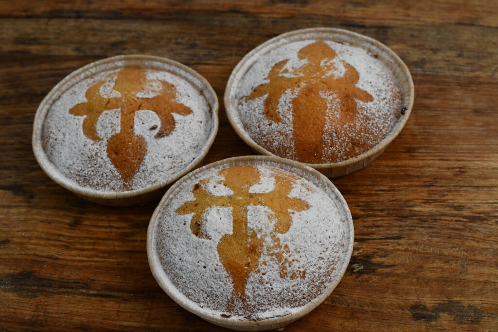
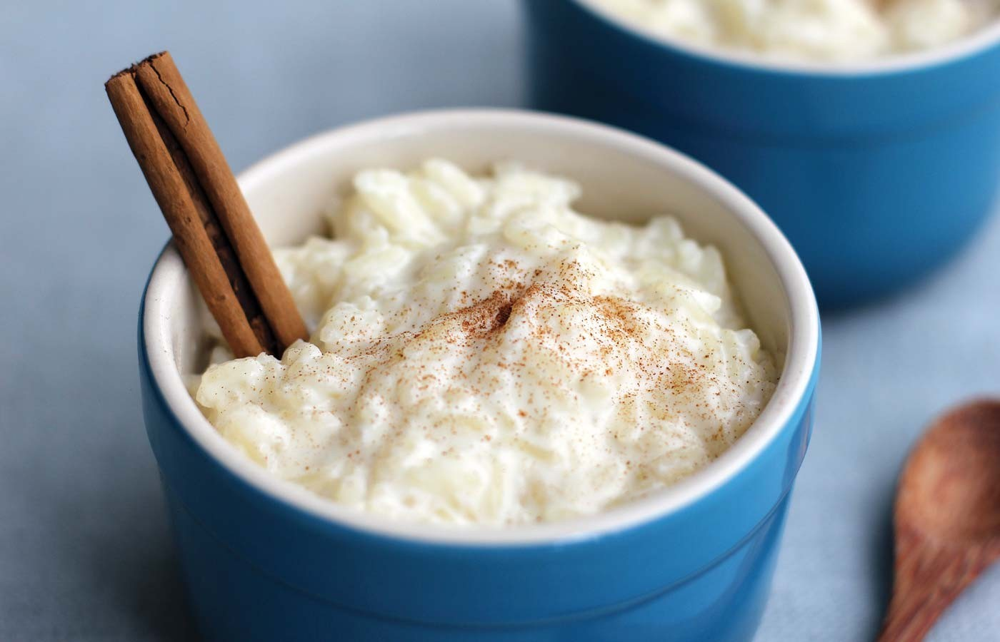
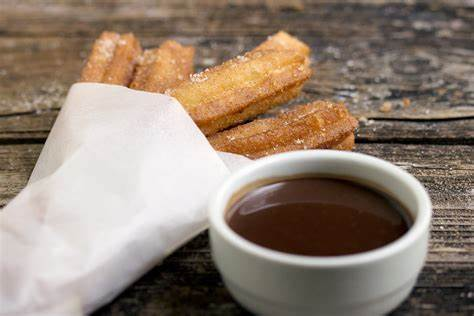
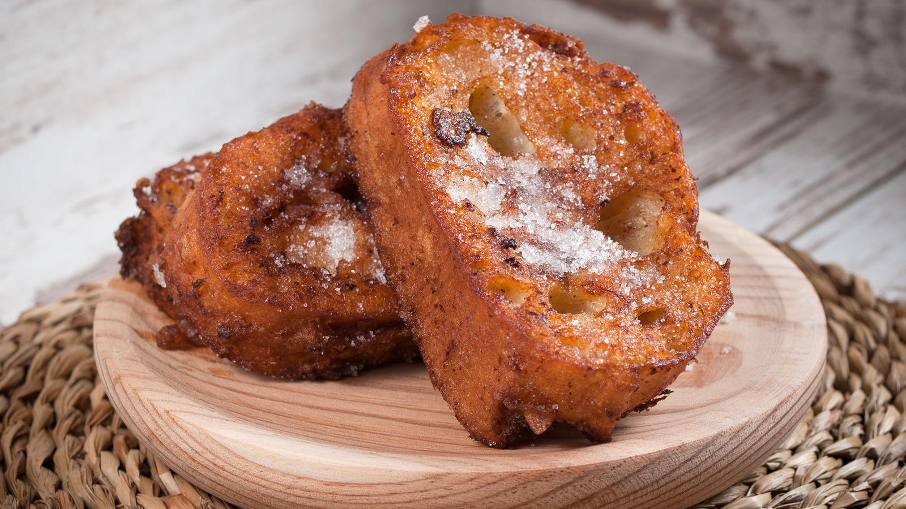

Carta de Platos
Descripción de la carta de platos...
Carta de Postres
Tarta de Santiago - 4.50€
Una deliciosa tarta de almendras originaria de Galicia.
Flan de Huevo - 3.50€
Un clásico flan de huevo casero con caramelo.

Arroz con Leche - 3.00€
Un cremoso postre de arroz con leche, canela y limón.
Churros con Chocolate - 4.00€
Churros recién hechos servidos con una taza de chocolate caliente.
Leche Frita - 3.50€
Un postre tradicional hecho de leche y harina, frito y espolvoreado con azúcar y canela.

Natillas - 3.00€
Suaves y cremosas natillas de vainilla, servidas con una galleta.

Torrijas - 4.00€
Rebanadas de pan empapadas en leche y huevo, fritas y espolvoreadas con azúcar y canela.
Crema Catalana - 4.50€
Una rica crema pastelera cubierta con una capa de azúcar caramelizado.

Pestiños - 3.50€
Dulces fritos bañados en miel, típicos de Andalucía.

Polvorones - 3.00€
Deliciosos polvorones caseros, perfectos para acompañar con un café.

Carta de Aguas
Agua Mineral Natural Solán de Cabras - 2.50€
Agua mineral natural de origen español con un sabor suave y refrescante.
Agua Mineral Natural Evian - 3.00€
Agua mineral natural de los Alpes franceses, conocida por su pureza y mineralización equilibrada.
Agua Mineral Natural Perrier - 3.50€
Agua mineral natural carbonatada de origen francés, famosa por sus burbujas únicas.
Agua Mineral Natural San Pellegrino - 3.00€
Agua mineral natural con gas de origen italiano, con un toque de burbujas y mineralización única.
Agua Mineral Natural Fiji - 4.00€
Agua mineral natural de las Islas Fiji, conocida por su sabor suave y su botella icónica.
Agua Mineral Natural Voss - 4.50€
Agua mineral natural de Noruega, embotellada en una botella de vidrio cilíndrica distintiva.
Agua Mineral Natural Volvic - 2.50€
Agua mineral natural de Francia, conocida por su origen volcánico y su sabor puro.
Agua Mineral Natural Acqua Panna - 3.00€
Agua mineral natural de Italia, famosa por su pureza y suavidad.
Agua Mineral Natural Icelandic Glacial - 4.00€
Agua mineral natural de Islandia, conocida por su origen glaciar y su equilibrio de minerales.
Agua Mineral Natural Dasani - 2.00€
Agua purificada mejorada con minerales para un sabor puro y fresco.
Agua Mineral Natural SmartWater - 2.50€
Agua destilada con electrolitos añadidos para un sabor puro y crujiente.
Agua Mineral Natural Nestlé Pure Life - 2.00€
Agua purificada que pasa por un proceso de filtración de 12 pasos.
Agua Mineral Natural Aquafina - 2.00€
Agua purificada por un sistema de filtración de siete pasos para garantizar la pureza y el sabor.
Agua Mineral Natural Gerolsteiner - 3.50€
Agua mineral natural de Alemania, conocida por su alto contenido de minerales.
Agua Mineral Natural Badoit - 3.50€
Agua mineral natural con gas de Francia, con un sabor suave y un toque de burbujas.
Agua Mineral Natural Topo Chico - 3.00€
Agua mineral con gas de México, famosa por su sabor refrescante y sus burbujas intensas.
Agua Mineral Natural Mountain Valley - 3.50€
Agua de manantial de Estados Unidos, embotellada en el lugar de origen en las montañas Ouachita.
Agua Mineral Natural Hildon - 4.00€
Agua mineral natural de Inglaterra, conocida por su sabor limpio y equilibrado.
Agua Mineral Natural Lauquen Artes - 4.50€
Agua mineral natural de Argentina, embotellada en el lugar de origen en la Patagonia.
Agua Mineral Natural Blk - 4.00€
Agua mineral con fulvic trace, conocida por su color negro y su sabor limpio y suave.

Carta de Cervezas
Cervezas Rubias
Estrella Damm - 3.00€
Agua mineral natural de origen español con un sabor suave y refrescante.
Heineken - 3.50€
Cerveza lager holandesa, famosa por su sabor equilibrado y su botella verde.
Corona Extra - 4.00€
Cerveza lager mexicana, ideal para disfrutar con una rodaja de limón.
Budweiser - 3.00€
Cerveza lager estadounidense, conocida como "The King of Beers".
Stella Artois - 3.50€
Cerveza lager belga, famosa por su sabor rico y su copa distintiva.
Cervezas Tostadas
Newcastle Brown Ale - 4.00€
Cerveza ale inglesa, conocida por su sabor a malta y caramelo.
Samuel Adams Boston Lager - 4.50€
Cerveza lager estadounidense, con un sabor equilibrado de malta y lúpulo.
Sierra Nevada Pale Ale - 4.50€
Cerveza ale estadounidense, famosa por su sabor a lúpulo y su aroma floral.
Guinness Draught - 5.00€
Cerveza stout irlandesa, conocida por su sabor a malta tostada y su espuma cremosa.
Hoegaarden - 4.00€
Cerveza blanca belga, con un sabor suave y notas de cilantro y cáscara de naranja.
<Cervezas Negras
Guinness Original - 5.00€
Cerveza stout irlandesa, famosa por su sabor a malta tostada y café.
Murphy's Irish Stout - 5.00€
Cerveza stout irlandesa, con un sabor suave y notas de caramelo y chocolate.
Samuel Smith's Oatmeal Stout - 5.50€
Cerveza stout inglesa, con un sabor rico a avena y malta tostada.
Left Hand Milk Stout - 5.50€
Cerveza stout estadounidense, con un sabor dulce a lactosa y café.
Young's Double Chocolate Stout - 6.00€
Cerveza stout inglesa, con un sabor rico a chocolate y malta tostada.

Carta de Licores
Descripción de la carta de licores...